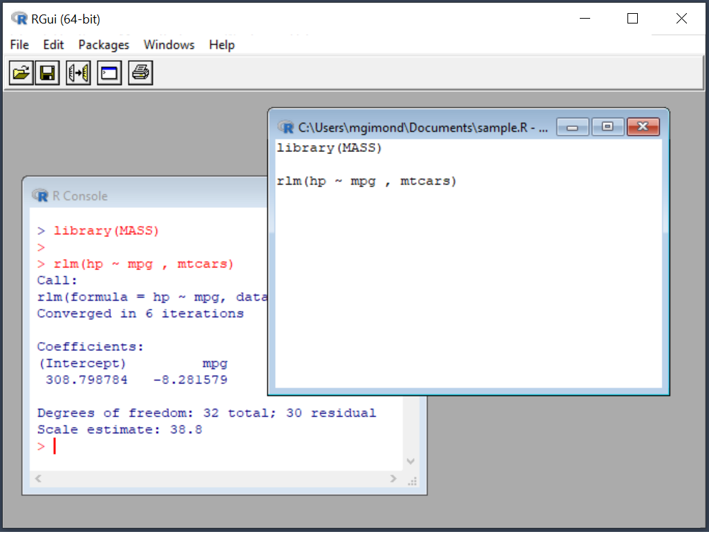
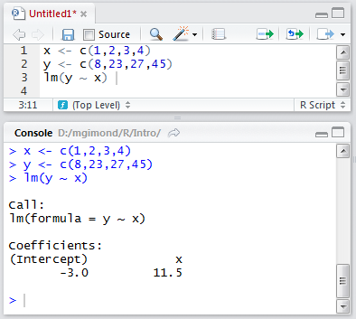
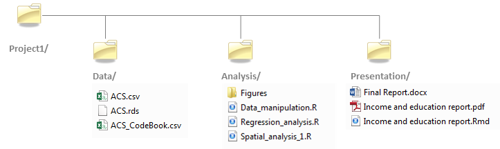
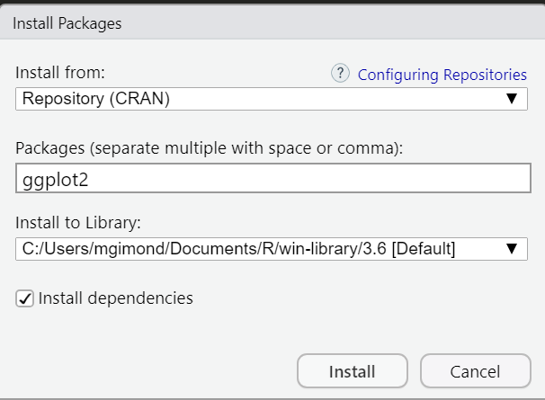

R and RStudio are two distinctly different applications that serve different purposes. R1 is the software that performs the actual instructions. It’s the workhorse. Without R installed on your computer or server, you would not be able to run any commands.
RStudio2 is a software that provides an nifty interface to R. It’s sometimes referred to as an Integrated Development Environment (IDE). Its purpose is to provide bells and whistles that can improve your experience with the R software.
RStudio comes in two flavors:
A desktop application that installs directly on your computer;
A server application that is accessible via a web browser.
Both platforms offer nearly identical experiences. The former runs on top of R installed on your computers, the latter runs off of an instance of R running on a remote server.
2.1.1 Do I need RStudio to interface with R?
The answer is No! Many new users to the R environment conflate R with RStudio. R has been around for decades, long before RStudio was developed. In fact, when you install R on your Windows or Mac computer, you are offered a perfectly functional barebones IDE for R.

R can even be run in a shell environment like Linux:
Note that while you do not need RStudio to run R on your computer, the reverse cannot be said. In other words, RStudio is not functional without an installation of R. You therefore need to install R regardless of whether or not you use RStudio.
2.1.2 Which software do I cite?
You will normally cite R and not RStudio since RStudio does not contribute to the execution of the code (i.e. an R script will run independently of the version of RStudio or of any other IDE used to interface with R).
You can access citation information for R via:
citation()
To cite R in publications use:
R Core Team (2023). _R: A Language and Environment for Statistical Computing_. R Foundation for
Statistical Computing, Vienna, Austria. <https://www.R-project.org/>.
A BibTeX entry for LaTeX users is
@Manual{,
title = {R: A Language and Environment for Statistical Computing},
author = {{R Core Team}},
organization = {R Foundation for Statistical Computing},
address = {Vienna, Austria},
year = {2023},
url = {https://www.R-project.org/},
}
We have invested a lot of time and effort in creating R, please cite it when using it for data analysis.
See also 'citation("pkgname")' for citing R packages.
2.2 Command line vs. script file
2.2.1 Command line
R can be run from a R console or RStudio command line environment. For example, we can assign four numbers to the object x then have R read out the values stored in x:
x <-c(1,2,3,4)x
[1] 1 2 3 4
2.2.2 R script files
If you intend on typing more than a few lines of code in a command prompt environment, or if you wish to save a series of commands as part of a project’s analysis, it is probably best that you write and store the commands in an R script file. Such a file is usually saved with a .R extension.
In RStudio, you can run a line of code of a R script file by placing a cursor anywhere on that line (while being careful not to highlight any subset of that line) and pressing the shortcut keys Ctrl+Enter on a Windows keyboard or Command+Enter on a Mac.
You can also run an entire block of code by selecting all lines to be run then pressing the shortcut keys Ctrl+Enter/Command+Enter. Or, you can run the entire R script by pressing Ctrl+Alt+R in Windows or Command+Option+R on a Mac.
In the following example, the R script file has three lines of code: two assignment operations and one regression analysis. The lines are run one at a time using the Ctrl+Enter keys and the output is displayed in the console window.

2.3 The assignment operator <-
When assigning values or output from operations to a variable, the assignment operator, <-, is placed between the variable name and the value(s) being assigned to that variable. In the preceding example, the values 1,2,3,4 were being assigned to x. The assignment operator is constructed by combining the less then character, <, with the dash character, -. Given that the assignment operator will be used frequently in an R script, it may be worthwhile to learn its shortcut: Alt+- on Windows and Option + - on a Mac.
Note that, in most cases, you can also use the = to assign values as in:
x = c(1,2,3,4)
However, this option is not widely adopted in the R community. An advantage in using <- instead of = is in readability. The <- operator makes it easier to spot assignments during a quick visual scan of an R script, more so than the = operator which is also used in functions when assigning variables to function parameters as in:
M <- lm(y ~ x, data = dat, weights = wt)
The alternative would be:
M = lm(y ~ x, data = dat, weights = wt)
Notice how the assignment of M does not stand out as well in the second example given the recurrence of = on the same line of code (unless, of course, if you benefit from colored syntax).
2.4 Understanding directory structures
Because a data file may reside in a different directory than that which houses the R script calling it, you need to explicitly instruct R on how to access that file from the R session’s working directory.
In the example that follows, user Jdoe has a project folder called Project1 in which reside a ./Data folder and an ./Analysis folder.

He opens the R script called Data_manipulation.R from the Analysis folder which contains the following line of code:
dat <-read.csv("ACS.csv")
He runs that line of code and R returns the following error message:
Error in file(file, "rt"): cannot open the connection
The error message states that the file ACS.csv cannot be found. This is because the session’s working directory is probably set to a directory other than the D:/Jdoe/Project1/Data directory which houses the data file. An R session’s working directory can be verified by typing the following command:
getwd()
[1] "D:/jdoe/Project1/Analysis"
The working directory is used to instruct R where to look for a file (or where to create one) if the directory path is not explicitly defined. So in the above example, user Jdoe is asking R to open the file ACS.csv without explicitly telling R in which directory to look so R is defaulting to the current working directory which is D:/jdoe/Project1/Analysis which does not contain the file ACS.csv.
There are two options to resolving this problem. The first is to set the working directory to the folder that contains the ACS.csv file using the setwd() function.
setwd("D:/Jdoe/Project1/Data")
The second is to modify the read.csv call by specifying the path to the ACS.csv file.
dat <-read.csv("D:/Jdoe/Project1/Data/ACS.csv")
However, this approach makes it difficult to share the project folder with someone else who may choose to place it under a different folder such as C:\User\John\Documents\Project1\. In such a scenario, the user would need to modify every R script that references the directory D:\Jdoe\Project1\. A better solution is to specify the location of the data folder relative to the location of the Analysis folder such as,
dat <-read.csv("../Data/ACS.csv")
The two dots, .., tells R to move up the directory hierarchy relative to the current working directory. So in our working example, ../ tells R to move out of the Analysis/ folder and up into the Project1/ folder. The relative path ../Data/ACS.csv tells R to move out of the Analysis/ directory and over into the Data/ directory before attempting to read the contents of the ACS.csv data file.
Using relative paths makes your project folder independent of the full directory structure in which it resides thus facilitating the reproducibility of your work on a different computer or root directory environment. Assume that the user of your code will set the working directory to the project folder.
2.5 Packages
One of R’s attractive features is its rich collection of packages designed for specific applications and techniques. Packages allow researchers and scientists to share R functions and data with other users. Some packages come already installed with R, others must be downloaded separately from a CRAN repository or other locations such as GitHub or personal websites.
2.5.1 Base packages
R comes installed with a set of default packages. A snapshot of a subset of the installed base packages is shown below:
2.6 Installing packages from CRAN
There are thousands of R packages to choose from. Most can be accessed from the CRAN repository. To install a CRAN package from within RStudio, click on the Packages tab, select Install and choose Repository (CRAN) as the source location. In the following example, the library ggplot2 is installed from CRAN.

Package installation from CRAN’s repository can also be accomplished using the following line of code:
install.packages("ggplot2")
The installation is usually straightforward and if any other packages need to be installed, RStudio will install those as well as long as the Install dependencies option is checked. In the previous example, ggplot2 requires that a dozen or so packages be present on your computer (such as RColorBrewer and reshape2)–all of which are automatically installed by RStudio.
Note that R packages are installed in the user’s home directory (C:/Users/…) by default. This is advantageous in that you do not need to have administrative privileges to install any packages. But it can be a disadvantage in that if someone else logs on to the same computer where you installed a package, that person will not have access to it requiring that she install that package in her home directory thereby duplicating an instance of that same package on the same computer.
2.6.1 Installing packages from GitHub
Some packages may be in development and deemed not mature enough to reside on the CRAN repository. Such packages are often found on GitHub–a website that hosts software projects. Installing a package from GitHub requires the use of another package called devtools available on CRAN.
For example, to install the latest version of ggplot2 from GitHub (i.e. the developmental version and not the stable version available on CRAN) type the following:
install.packages("devtools") # Install the devtools package if not already presentlibrary(devtools) # Load the devtools package in the current R sessioninstall_github("tidyverse/ggplot2")
The argument tidyverse points to the name of the repository and ggplot2 to the name of the package.
2.6.2 Using a package in a R session
Just because a package is installed on your computer (in your home directory or in a directory accessible to you) does not mean that you have access to its functions. For example, after installing the ggplot2 library you might want to use one of its functions, qplot, to generate a scatter plot,
ggplot(mtcars, aes(mpg, wt)) +geom_point()
only to see the following error message:
Error in ggplot(mtcars, aes(mpg, wt)): could not find function "ggplot"
This is because the contents of the ggplot2 package have not been loaded into the current R session. To make the functions and/or data of a package available to an existing R session, you must load its content using the library() function:
library(ggplot2)
Once the package is loaded in the current R session, you should have full access to its functions and datasets.
qplot(mpg, wt, data=mtcars)
2.7 Getting a session’s info
Reproducibility is a fundamental idea behind an open source analysis environment such as R. So it’s only fitting that all aspects of your analysis environment be made available (along with your data and analysis results). This is because functions and programming environments may change in their behavior as versions evolve; this may be by design or the result of a bug in the code fixed in later versions. No piece of software, open-source or commercial, is immune to this. It’s therefore important that you publicize the R session used in your analysis. A simple way to do this is to call the sessionInfo() function.
Output includes all loaded base packages and external packages (e.g. ggplot2 in this working example) as well as their version.
R Core Team (2020). R: A language and environment for statistical computing. R Foundation for Statistical Computing, Vienna, Austria. URL https://www.R-project.org/↩︎
RStudio Team (2021). RStudio: Integrated Development for R. RStudio, PBC, Boston, MA URL http://www.rstudio.com/.↩︎